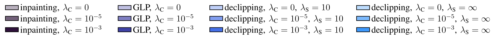
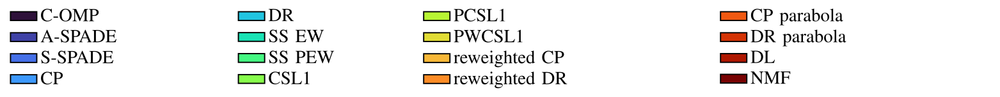
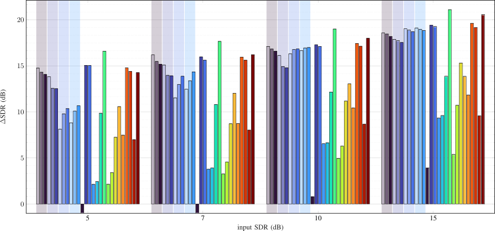

This is the accompanying page for the article Regularized autoregressive modeling and its application to audio signal reconstruction authored by Ondřej Mokrý and Pavel Rajmic, submitted to IEEE Transactions on Audio, Speech, and Language Processing.
Autoregressive (AR) modeling is invaluable in signal processing, in particular in speech and audio fields. Attempts in the literature can be found that regularize or constrain either the time-domain signal values or the AR coefficients, which is done for various reasons, including the incorporation of prior information or numerical stabilization. Although these attempts are appealing, an encompassing and generic modeling framework is still missing. We propose such a framework and the related optimization problem and algorithm. We discuss the computational demands of the algorithm and explore the effects of various improvements on its convergence speed. In the experimental part, we demonstrate the usefulness of our approach on the audio declipping and dequantization problems. We compare its performance against state-of-the-art methods and demonstrate the competitiveness of the proposed method in declipping musical signals, and its superiority in declipping speech. The evaluation includes a heuristic algorithm of generalized linear prediction (GLP), a strong competitor which has only been presented as a patent and is new in the scientific community.
The preprint is available at arXiv.
Below, we present the comparison of the regularized AR model with the methods from the survey [1]. This corresponds to Fig. 4 from the article, but in addition, results using the “replace reliable” post-processing strategy [2] are included.
Results of the methods based on the AR model, treated in the article, are indicated with a background color. In the case of PEMO-Q and PEAQ, results using the “replace reliable” strategy from [2] are shown using stacked bars. For each algorithm which may produce signals inconsistent with the reliable samples, the cross-faded strategy is applied and the updated result is shown in lighter shade.
Legend for the AR-based methods (shared for all the plots):
Legend for the methods taken from the declipping survey [1]:
Note that ∆SDR denotes the improvement of SDR over the clipped signal, i.e. over the input SDR.
The Wilcoxon signed-rank test was conducted to assess significance of the differences between the methods. We have used the implementation available in MATLAB: [p, h] = signrank(x,y) returns the p-value of a paired, two-sided test for the null hypothesis that x – y comes from a distribution with zero median.
In words, simplified: p < 0.05 → h = 1 → null hypothesis rejected → x > y. In the presented visualizations, x and y represent the methods on the vertical and horizontal axes, respectively.
This section only includes the signals reconstructed using the AR-based methods discussed in the article (and without the “replace reliable” step).
To listen to the reference reconstructions, please see the accompanying webpage to [1] and [2]. Since the experiment protocol was identical, the examples are comparable.
Please note that the differences between the individual reconstructions may be very subtle. There might be no audible clipping present in the reconstructed audio, only a subtle change in timbre. If you struggle to hear any differences, you can download the two WAV files that you want to compare and merge them in a single stereo file as separate (left/right) channels. This way, the differences become easier to recognize.
Chosen audio file: a08_violin
Chosen input SDR: 5 dB
| Clean | |
| Clipped |
| inpainting | GLP | declipping | ||
|---|---|---|---|---|
| \(\lambda_S = 10\) | \(\lambda_S = \infty\) | |||
| \(\lambda_C = 0\) | ||||
| \(\lambda_C = 10^{-5}\) | ||||
| \(\lambda_C = 10^{-3}\) | ||||